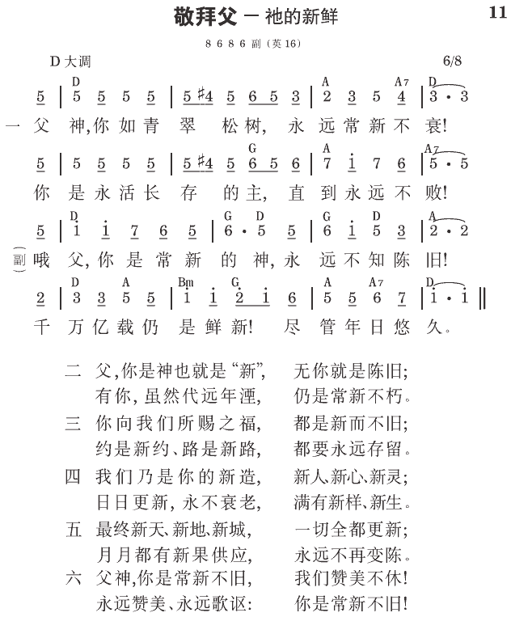

罗12:2 不要模仿这世代，反要借着心思的更新而变化，叫你们验证何为神那美好、可喜悦、并纯全的旨意。
多3:5 祂便救了我们，并不是本于我们所成就的义行，乃是照着祂的怜悯，借着重生的洗涤，和圣灵的更新。
圣化带进更新
重生使我们得着神的生命，圣化把我们的性情变化了。信徒被圣灵圣化时，自然就得到在属灵生命上的更新。
心思的更新
罗马十二章二节说，“不要模仿这世代，反要借着心思的更新而变化。”我们不要模仿这世界的样子，就是不要讲究时髦，却要借着心思的更新而变化。圣经里讲的更新，乃是心思的更新，完全是心思的问题。心思就是我们的心理，我们的哲学，我们的宗教思想、对人事的看法等。我们需要被更新，主要的是我们的心思要更新。
受圣经的教训和圣灵的光照，而有的去旧更新
我们如何更新我们的心思，叫我们全人得着更新？得更新的路，就在于祷告和读圣经；因为心思的更新乃是在一切对人生事物的观念上，受圣经的教训和圣灵的光照，而有的去旧更新。你把圣经读熟了，圣灵就光照你、指导你。你这样天天祷告、读经，圣灵来把你光照一下，就把你里面的心思都去旧更新。这样，你的眼光就不同了，你这个人也就得着了更新。
使信徒在属灵生命上有变化
此种心思上的更新，使信徒在属灵生命上有变化。提多书三章五节说到重生的洗涤和圣灵的更新。重生的洗涤把我们的老旧洗掉了，接着圣灵的更新就把我们的心思更换了。我们的心思一更新，全人就变化。这就是借着心思的更新而变化。重生的洗涤洁除我们旧人一切旧性情的东西，而圣灵的更新将新的东西，新人神圣的素质，分赐到我们里面。借此，我们就从已往所在的老旧光景转入全新的光景，从旧造进入新造的情形 （《神救恩生机的一面》四二至四五页）。
参读：《神救恩生机的一面》第三篇；《神生机救恩的秘诀─那灵自己同我们的灵》第三章。
